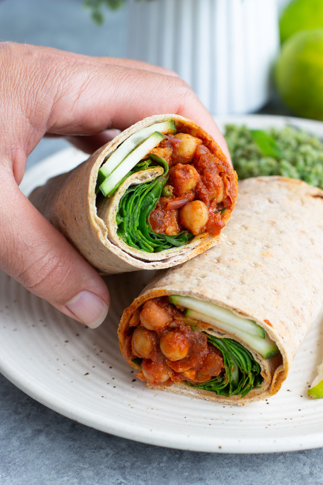

Lavash Veggie Wrap
A tasty lavash veggie wrap utilizing the roasted red pepper hummus. You can use an assortment of different vegetables in this recipe. The selection I'm choosing is one of my favorites and a great starting place if you're not sure what to choose.

Ingredients
- Lavash Bread (whole wheat or regular)
- Roasted Red Pepper Hummus
- 1/4 Cup Sauted Mushrooms
- 1/4 Cup Black Beans
- 3 Leaves of lettuce, chopped
- 5 Cherry Tomatoes, halved
- 1 tbsp Nooch
- Few Slices Red Onion
steps
- Lay out your lavash bread
- Spread hummus on bread
- Place sauted mushroom
- Add black beans
- Place tomates
- Place lettuce
- Place onion
- Sprinkle Nooch
- Wrap the whole thing up
- Enjoy your lunch!